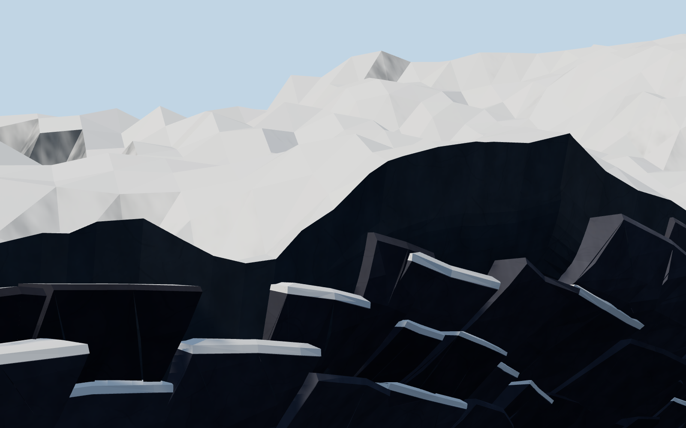
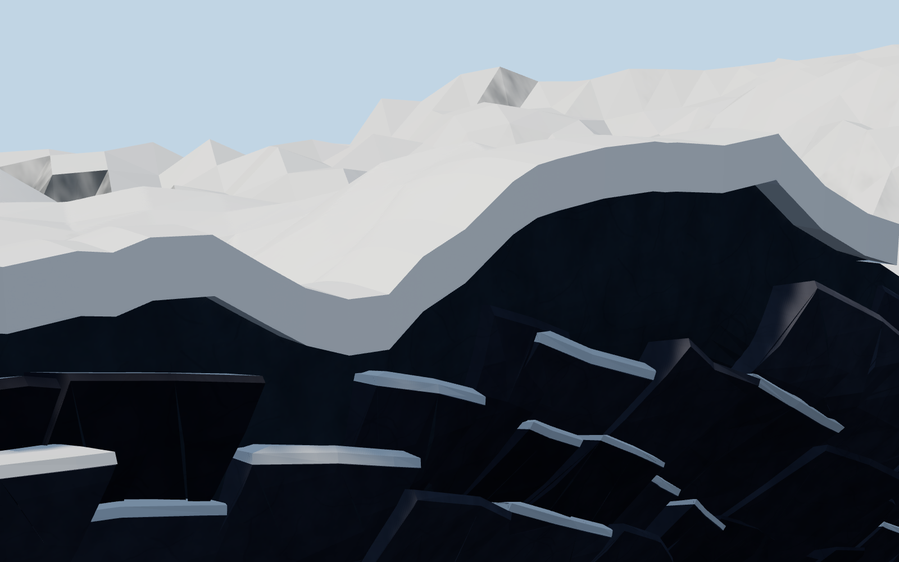
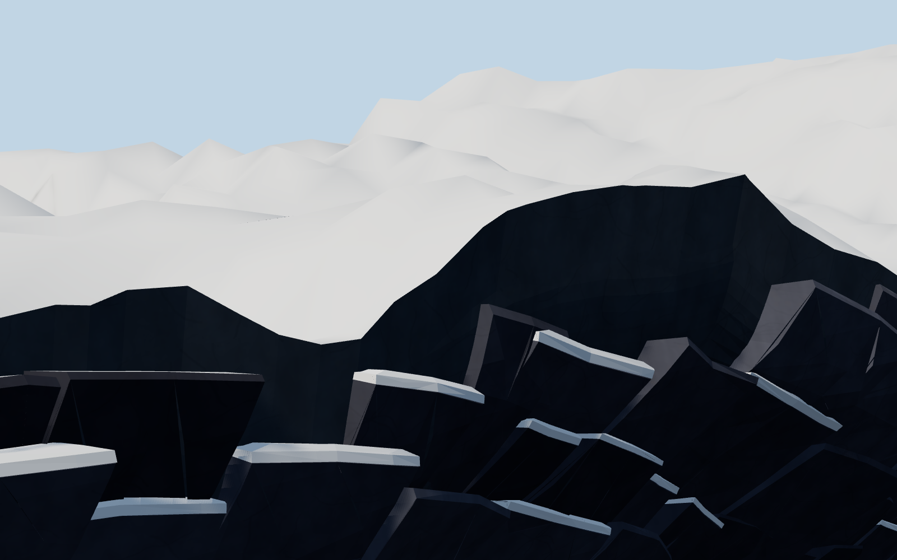
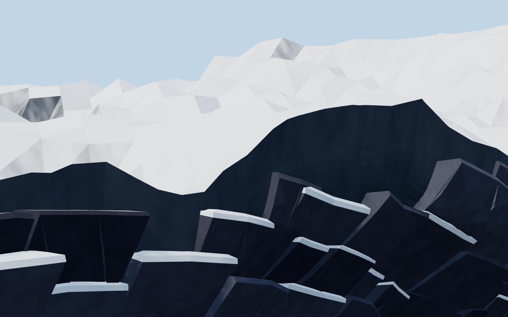
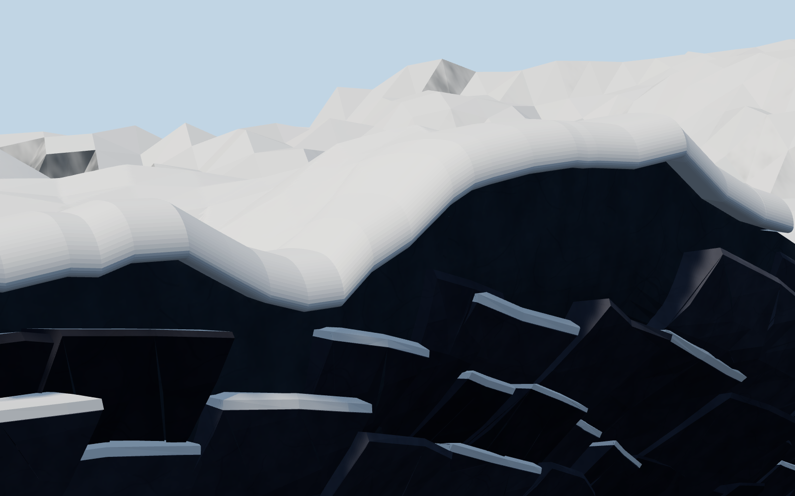
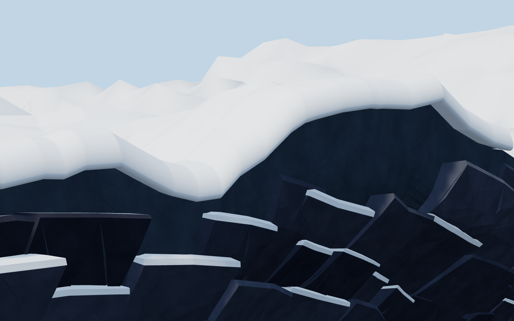

Снег A–F · Ракурс 2
Один участок, одинаковый камень и камеры. Проба: плато 0,8 м · край 2,5 м · свес 2 м · округление R2 м.
A · Исходник

B · + объём · прямой край

C · Только гладкие нормали верха

D · Только заполняющий свет ×2

E · B + округление края

F · Объём + округление + нормали + свет
